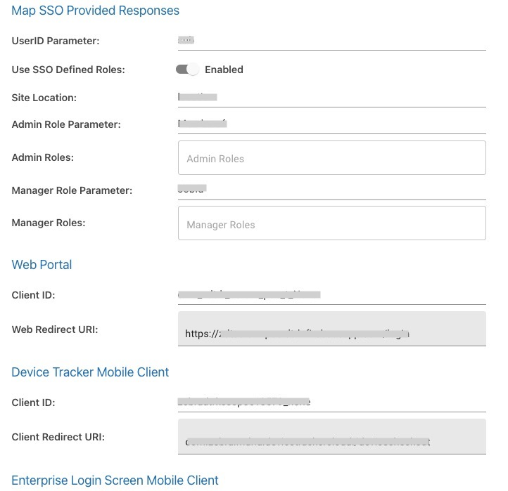
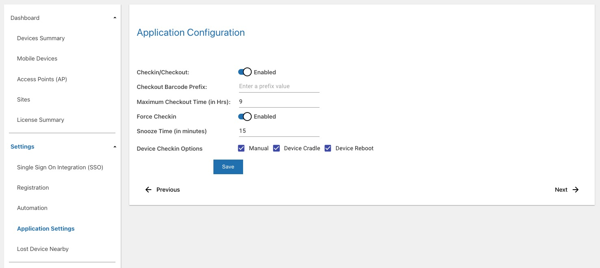
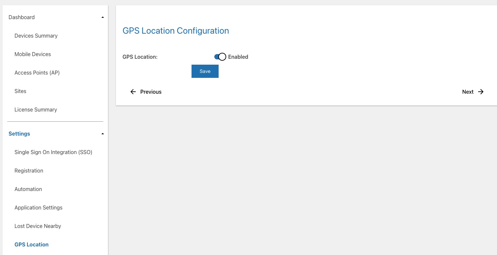

Overview
The web portal provides the capability for administrators to manage assets (devices, access points, and sites), configure Device Tracker and generate reports. Administrators must register devices, access points (AP) and sites for Device Tracker operation. This is performed manually or by uploading data through a .CSV file; keep in mind the following:
- Maximum device support: 100,000 devices
- Maximum web portal support: 500 sites and 25,000 devices
- Maximum .CSV import: 25,000 records
Note: When importing .CSV files with 25,000 or more, expect it to take some time. To import files quicker, Zebra recommends to import 1,000 records at a time.
Device Tracker supports 3 user roles: administrator, manager and user/associate. Functions and capabilities of the user varies based on the assigned role:

|

|

|
||
|
Administrator View status of devices across all locations |
Manager View status of devices within their location |
User/Associate View misplaced devices that need to be found |
Note: Secondary Bluetooth Low Energy (BLE) configuration is part of the Install & Setup.
Administrator Role
Administrator functions and capabilties:
- Administrator dashboard to manage and view assets at the corporate-level and site-level:
- Integrate SSO
- Manage Users
- Manage Sites
- Manage Access Points
- Manage Devices
- Configure Manager Access to Modify Devices and/or Access Points (optional)
- Configure Device-to-Site Assignment (optional)
- Configure Device Checkin/Checkout (optional)
- Set Barcode Prefix (optional)
- Configure Workflow Automation (optional)
- Generate Reports (optional)
- Monitor Licenses
- Device dashboard to view devices at the corporate-level
- Site Search
- All Manager and Associate capabilities.
Manager Role
Manager functions and capabilities:
- Manager dashboard to manage (if permitted) and view assets at the site-level:
- Mark a device for retrieval ("To Be Found") (To Be Found)
- Mark a device out of service (decommission) with a note
- Clear a retrieval request
- Device or AP Search
- All Associate capabilities
User/Associate Role
User/Associate functions and capabilties:
- Device Checkout/Checkin
- View marked devices for retrieval ("To Be Found")
- Find devices using the BLE proximity meter and audio chirp
- Mark devices as found or cannot be found
Single Sign-On (SSO)
Optionally, integrate single sign-on (SSO) in Device Tracker and map SSO roles to access the Device Tracker dashboards on the web portal and device to authenticate manager and administrators with their corporate SSO login credentials. In conjunction, Enterprise Login Screen can be used to control device access and checkout the device using corporate SSO login credentials for accountability.
There are 3 different levels of Device Tracker access based on user role: administrator, manager, or associate. SSO activation allows administrators and managers to login to Device Tracker with their SSO credentials and gain access to their respective dashboards on the device and web portal. For other users, there is no change in Device Tracker client app access when logging in with their SSO credentials - after logging in, the To Be Found screen is seen when the client app is launched. SSO credentials are not used for user accountability, only for user authentication to gain device access.
To enforce user accountability and prevent device access until the user logs in with their SSO credentials, install Enterprise Login Screen (ELS). User accountability associates the user to the device based on login so the administrator can track device ownership.
Only OAuth 2.0 with PKCE or Mutual-TLS is supported for SSO integration. When SSO is integrated, by default it uses OAuth 2.0 with PKCE. For integration with Mutual-TLS client certificates, see Mutual-TLS Certificate Generation & Deployment.
Notes:
To use SSO, Device Tracker 5.1 or higher is required on the device. Otherwise, a server connection failed error may occur. To recover, clear the Device Tracker application cache either manually through Android settings or using App Manager through MX.
When using Chrome for the first time on the device and attempting to login with SSO, the following steps are required before proceeding to login:
- Accept the Google Terms of Service.
- Select the desired option when prompted to turn on sync.
If the device is running Android 8, the SSO login page appears again after logging in sucessfully. Tap the back button to open the Device Tracker dashboard.
Mutual-TLS Certificate Generation & Deployment
When ready to activate SSO OAuth 2.0 using Mutual-TLS client certificates, gather the required certificate files and related information:
- Certificate private key (.key file) from the certificate owner
- Certificate password (saved in passphrase.txt) used to generate the private key
- SSL certificate issued by the CA (.p7b file)
- SSL certificate (.pfx file) converted from P7B
- Public certificate (.crt file) generated from PFX format
- Certificate expiration date
Steps to generate the SSL certificates are provided below. After all the certificate information is gathered, contact Zebra technical support to raise a ticket for SSO integration with Device Tracker. Zebra services will request the above information and follow-up with next steps.
To generate the SSL certificates, perform the following:
Create a certificate CER file with the following command:
openssl pkcs7 -print_certs -in ssl_certificate.p7b -out ssl_certificate.cerwhere "ssl_certificate.p7b" is the certificate issued by the CA.
Create an SSL certificate in PFX format using the following command:
openssl pkcs12 -export -in ssl_certificate.cer -inkey private.key -out ssl_certificate.pfxwhere "private.key" is the private key from the certificate owner and "ssl_certificate.cer" is the file generated from step 1. Save the private key password in passphrase.txt. When prompted, enter the certificate password and specify the export password using the same password as the certificate password.
Generate a public certificate in CRT format with command:
Openssl pkcs12 -in ssl_certificate.pfx -clcerts -nokeys -out dtrk_sso_public.crt
Action is required to activate SSO for integration with Device Tracker after Zebra services enables SSO in the cloud server. Only activate SSO when all devices have Device Tracker 5.1 or higher. Follow the SSO integration steps and then create SSO users if role-based mapping is not in use. When SSO is activated, only SSO users can login; non-SSO users cannot login.
SSO Integration
Follow these steps to integrate SSO with Device Tracker - it is important to perform the step to create an SSO user:
In the browser, launch the Device Tracker web portal using the URL supplied. Login using the super administrator credentials provided by Zebra. Enter the User ID and Password. Click Log In.

After login, click Settings > Single Sign On Integration (SSO).

Toggle Disabled to enable SSO integration with OAuth 2.0 Protocol. The SSO configuration page appears.

For Client Authentication Type, select one of the following:
- None - Select this option for PKCE client authentication. If selected, Proof Key For Code Exchange is enabled.
- Client TLS Certificate - Select this option for Client TLS Certificate client authentication. If selected, Proof Key For Code Exchange is disabled.
Enter the appropriate information for all fields based on the SSO server settings. If using role-based mapping, enter the information under the Map SSO Provided Responses section based on your SSO parameters:
- UserID Parameter - user ID or user name parameter that is configured in SSO and returned from the SSO response upon authenticating the user
- Use SSO Defined Roles - if enabled, uses role-based mapping to automatically map the administrator and manager user roles based on roles defined in your SSO. If disabled, the admin and manager users must be defined in the Manage Users section. Zebra recommends to enable this option to leverage the roles that exist through your SSO and avoid the need to manage users through Device Tracker.
- Site Location - site parameter that determines the location or site of the user
- Admin Role Parameter - parameter that identifies whether the user is an admin
- Admin Roles - names of the admin roles
- Manager Role Parameter - parameter that identifies whether the user is a manager
- Manager Roles - names of the manager roles 
Register the following by entering the Client ID:
- Web Portal
- Device Tracker Mobile Client
- Enterprise Login Screen Mobile Client
Scroll to the bottom of the page and click Validate.
Make sure pop-up windows are not blocked in the browser. During the validation process, a status window appears followed by a login prompt - it is important to enter your login credentials to complete the validation process.
When validation is successful, a confirmation prompt appears asking if you would like to activate SSO.
Click Yes.
A confirmation message appears indicating successful SSO configuration activation.

Important: The admin must add at least one SSO admin user. See Add SSO User. Otherwise, if the admin logs out before adding the SSO admin user, no admin user can login due to the lack of an SSO admin user registered.
Sign out from the non-SSO session. In the top right, click on the signout icon.

The SSO login page appears. Enter the user credentials to login. Click Sign In.
Click on Settings > Single Sign On Integration (SSO). The SSO Activation Status shows Activated.

Enterprise Login Screen (ELS)
Enterprise Login Screen (ELS) is a separate mobile application that works in conjunction with SSO. It blocks device access until the user logs in with their SSO credentials. These login credentials are passed to Device Tracker for accountability and the appropriate Device Tracker screen is displayed to the users based on their role:
- Administrators - the admin dashboard displays data across all sites in the organization
- Managers - the manager dashboard displays data specific for their assigned site
- Associates - users are presented with the To Be Found screen listing devices flagged for retrieval
When ELS is launched, it grants access to the custom SSO login screen. After the user logs in with their SSO credentials, the user is associated to the device for accountability. When the user logs out, the user is disassociated from the device and the ELS screen is displayed, preventing access to the device until the user logs in.
Requirements for ELS:
- SSO must be activated
- Checkin/Checkout must be enabled - ELS takes place of the Checkout screen, replacing it with an SSO login screen. If any Device Checkin Options are enabled, when the selected action(s) is triggered from that option, the ELS screen appears in place of the Checkout screen.
- Enterprise Login Screen and Chrome must be added to the Lock Task Mode allow list through an EMM or other method. This blocks the user from accessing the device until the user logs in with their SSO credentials.

Enterprise Login Screen
In the Enterprise Login Screen, tap Next for the custom SSO login screen to appear, prompting the user to login with their SSO credentials.
Notes:
- When using an EMM (Enterprise Mobility Management) system:
- The EMM must allow ELS and Google Chrome to run on the device. Optionally, the administrator can hide Chrome in the launcher app home screen on the device.
- For security, the administrator can allow navigation only to the SSO URL to block all other URL access.
- When using AirWatch:
- Attended Mode does not function with ELS.
- There is a limitation using ELS with the floating home button; the user is able to access the AirWatch home screen when tapping the button. If it is required to have ELS block device access, do not enable the floating home button in AirWatch.
SSO Configuration
To configure ELS, it is part of the SSO Integration.
Bypass Passcode Configuration
Enterprise Login Screen (ELS) can be bypassed by using a bypass passcode that allows a user to gain device access without SSO. This is useful in unexpected situations when they are not able to login with their SSO credentials, such as if the SSO server is down or the WiFi network is down. The administrator creates a passcode with an associated group name and supplies this passcode to the user to enter into the device for access to be granted.
Requirements for login bypass:
- SSO must be activated
- Checkin/Checkout must be enabled
- Enterprise Login Screen is installed
To configure a passcode:
- Login as administrator to the web portal.
- Go to Settings > SSO.
- Scroll to the Passcodes section located at the bottom of the page.
- Click Add.
- Enter the following:
- Name - to aid in identifying the user
- Passcode - the passcode cannot contain special characters, such as
: = # { } [ ] : ; / \
- Click Confirm.
 |
 |
|
| Add new passcode with group name |
Manage Users
To access the Device Tracker web portal, user accounts are managed through Manage Users. Add, edit or delete admin and manager user accounts based on SSO or non-SSO access (end-user accounts are not required):
- Non-SSO - If SSO is not activated, only non-SSO users can be added, requiring an email address as the user ID. When logging in for the first time, the user must click Forgot your password in the web portal login screen. After entering the user email address, an email message is sent with a link for the user to set their password.
- SSO - If SSO is activated, only SSO users can be added based on the same user ID as that given by the SSO provider.
Each user is designated a Device Tracker role: manager or admin. For managers, a site must be assigned for the manager to oversee.
Important:
- Although SSO can be deactivated after it is activated, Zebra recommends to maintain the same users based on whether SSO is activated. If SSO is not activated, only keep non-SSO users. If SSO is activated, only keep SSO users.
For first-time use as a administrator in non-SSO mode, action is required to set the password. Click Forgot Your Password in the web portal and enter the email address when prompted. The admin is registered as a user in the system during onboarding. An email will be sent to the administrator with a link to set the password.
Access the web portal by entering the URL provided by Zebra in a supported browser and select Manage Users from the left menu.

Device Tracker web portal
Add User
Follow one of the procedures below to add a user based on whether or not SSO is activated.
SSO User
If SSO is activated, follow these steps to add admin or manager user accounts as SSO users:
- Log in to the web portal as an administrator.
- In the web portal, click Manage Users in the left menu.
- Click Add user from the top right.
- A message appears at the top indicating that SSO is active.
- Select the user role:
- Admin - Grants access to all sites; see Administrator Role.
- Manager - Grants access to assigned site; see Manager Role.
- Enter the User ID. This must match the user ID from the SSO provider.
- If adding a Manager role, in the Select Site dropdown, select the site to assign.
- Click Add user. The new user is added to the user table.
Non-SSO User
If SSO is not activated, follow these steps to add admin or manager user accounts as non-SSO users:
- Log in to the web portal as an administrator.
- In the web portal, click Manage Users in the left menu.
- Click Add user from the top right.
- A message appears at the top indicating that SSO is inactive.
- Select the user role:
- Admin - Grants access to all sites; see Administrator Role.
- Manager - Grants access to assigned site; see Manager Role.
- Enter the User ID based on the following guidelines:
- Must be a valid email
- Maximum length: 255 characters
- Special characters allowed prior to '@':
! ~ # $ % ^ & * - _ + = {} | ' / ? - Characters allowed after '@':
. - - Spaces are not allowed
- '@' character is only allowed once
- '.' is only allowed in the middle of alphanumeric characters before and after '@'.
- If adding a Manager role, in the Select Site dropdown, select the site to assign.
- Click Add user. The new user is added to the user table.
Delete User
To delete an admin or manager user account:
- Log in to the web portal as an administrator.
- From the web portal, tap Manage Users in the left menu.
- From the list of users, locate the user to delete and click on the delete icon next to the user.
- Click OK in the confirmation message.
Edit User
To edit the site to which a manager is assigned:
- Log in to the web portal as an administrator.
- From the web portal, tap Manage Users in the left menu.
- From the list of users, locate the manager to edit and click on the edit icon next to the user.
- From the dropdown, select the new site to assign the manager. Click Save.
- The table displays the new site the manager is assigned.
Search User
Administrators or managers can be searched based on user ID. To search for a user:
- Log in to the web portal as an administrator or manager.
- From the web portal, tap Manager Users in the left menu.
- Enter the user ID to search for in the search field located below the Add User button from the top right of the page. Press the enter key.
- The search results are displayed. If searching for an email address for non-SSO users, the entire email address must be entered.
Reset Password
The password is set or reset through the web portal.
Steps to set or reset the password:
- From the web portal login page, click Forgot your password.
- Enter your email address then click Reset Password.
- A message appears indicating a password reset email is sent.
- Open the email and click on the link.
- Enter the new password based on the following guidelines:
- Minimum length: 6 characters
- Any combination of letters, numbers and symbols (ASCII-standard characters) are accepted.
- The password is reset with the new password.
Manage Sites
Administrators register sites to designate specific locations within an organization. Add, modify, or delete sites by importing a .CSV file with the site information. Or, add sites manually through the dashboard.
CSV File
A sample .CSV file is supplied by Zebra for the administrator to populate with the appropriate data. Importing data either modifies or adds entries to the existing database, unless deleting a site, which removes the site record. The data fields are:
| Data | Description | Required |
|---|---|---|
| SiteName | Site name or location. Supported characters are alphanumeric. Special supported characters: _-@%&*!+^()=?:
|
Yes |
| timeZone | Time zone of site location. Time zone is case-sensitive, see supported Time Zones. |
Yes |
| scheduledReportTime | Specified time to generate daily End of Day Report based on cron time expression format: * * * * *, where only the first 2 parameters specifying the minute and hour respectively are required. The report is sent on a daily basis to the specified recipients in the emailList field. For example 30 21 * * * generates a report at 9:30 PM.
| Yes |
| EmailSubscribed | Indicates whether users are subscribed to receive the End of Day Report: True/False. | Optional |
| emailList | A comma separated list of email addresses to receive the End of Day Report. | Optional |
| snapshotReportCategories | A comma separated list of categories or device states to report for the End of Day Report. | Optional |
| attachCSV | Indicates whether report attachments are added to the email for the End of Day Report: True/False | Optional |
| startIPAddress | Specifies the start IP address range for the site. This applies if IP Address Range is configured for Device-to-Site Assignment under Settings > Registration in the web portal | Optional |
| endIPAddress | Specifies the end IP address range for the site. This applies if IP Address Range is configured for Device-to-Site Assignment under Settings > Registration in the web portal | Optional |
Sample .CSV file content:
SiteName,timeZone,scheduledReportTime,EmailSubscribed,emailList,snapshotReportCategories,attachCSV,startIPAddress,endIPAddress
New York,America/New_York,30 21 * * *,True,admin@my_company.com,"To be found,Being Found,Cannot Find,Low battery,Disconnected,Never Connected,Decommissioned",TRUE,10.30.1.50,10.30.1.100
When modifying the .CSV file, keep the header information intact and replace the sample data with the appropriate data desired. It is particularly important for the AP location friendly name to be easily understood for users to determine the location within the facility when finding a device. The .CSV file cannot be UTF-8 encoded, otherwise an error can occur; it must be saved in a normal comma separated values format.
Add Sites
Register sites either manually or by uploading the .CSV file.
Manual
To register sites manually:
- Login to the web portal as an administrator.
- From the left menu, under Dashboard select Sites.
- Click Manage. From the dropdown, select Add.

- Select Manual and click Continue.

- Provide the following:
- Site - site name
- Start IP Address - start IP address for range of IP addresses assigned to the site; IP Address Range Configuration must be enabled.
- End IP Address - end IP address for range of IP addresses assigned to the site; IP Address Range Configuration must be enabled.
- Timezone - select the local time zone of the site
- Email subscribed - if enabled, sends an email with the End of Day snapshot report to designated managers and administrators
- Scheduled Report Time - select the local time for the End of Day report to be generated, providing a snapshot device report at the specified time
- Email List - email addresses of the recipients to receive the End of Day report, each email address separated by a comma
- Email Criteria - select the device states to report for the End of Day snapshot report
- Include Attachments - if enabled, sends report attachments to email as CSV files, 1 file per device state selected from the Email Criteria

- Click Confirm. The new site is added.
Upload CSV
To register sites by uploading the .CSV file:
- Login to the web portal as an administrator.
- From the left menu, under Dashboard select Sites.
- Click Manage. From the dropdown, select Add.
- Select Upload CSV and click Continue.

- Click Select files and browse to the desired .CSV file, or drag and drop the .CSV file.

- The selected file name is displayed. Click Import.
- If successful, a message appears indicating the import was successful.
Modify Sites
Modify sites either manually or by uploading the .CSV file.
Manual
To modify a site manually:
- Login to the web portal as an administrator.
- From the left menu, under Dashboard select Sites.
- Check the box next to the site to modify. The Actions menu appears. Click Actions and from the dropdown, select Modify Details.

- Provide the following:
- Timezone - select the local time zone of the site
- Email subscribed - if enabled, sends an email with the End of Day snapshot report to designated managers and administrators
- Scheduled Report Time - select the local time for the End of Day report to be generated, providing a snapshot device report at the specified time
- Email List - email addresses of the recipients to receive the End of Day report, each email address separated by a comma
- Email Criteria - select the device states to report for the End of Day snapshot report
- Include Attachments - if enabled, sends report attachments to email as CSV files, 1 file per device state selected from the Email Criteria

- Click Confirm. The site is updated.
Upload CSV
Modify sites by uploading the .CSV file containing the modified information:
- Login to the web portal as an administrator.
- From the left menu, under Dashboard select Sites.
- Click Manage. From the dropdown, select Modify.
- Click Select files and browse to the desired .CSV file, or drag and drop the .CSV file.

- The selected file name is displayed. Click Import.
- If successful, a message appears indicating the import was successful.
Delete Sites
Delete sites either manually or by uploading the .CSV file.
Manual
To delete a site manually:
- Login to the web portal as an administrator.
- From the left menu, under Dashboard select Sites.
- Check the box next to the site to modify. The Actions menu appears. Click Actions and from the dropdown, select Delete.

- Click Confirm. The site is deleted.
Upload CSV
To delete sites from the database, upload a .CSV file containing one or more AP sites information to remove.
- Login to the web portal as an administrator.
- From the left menu, under Dashboard select Access Points.
- Click Manage. From the dropdown, select Delete.
- Select Upload CSV and click Continue.

- Click Select files and browse to the desired .CSV file, or drag and drop the .CSV file.

- The selected file name is displayed. Click Import.
- If successful, a message appears indicating the import was successful.
Manage Access Points
Register access points with friendly names to aid in identifying device location within a site when finding devices. Add, modify, or delete APs either manually or by importing a .CSV file with the AP information through the web portal.
CSV File
A sample .CSV file is supplied by Zebra for the administrator to populate with the appropriate data. Importing data either modifies or adds entries to the existing database, unless deleting an AP, which removes the AP record. The data fields are:
| Data | Description | Required |
|---|---|---|
| SiteName | Site name or location. Supported characters are alphanumeric. Special characters supported: _-@%&*!+^()=?:
|
Yes |
| BSSID | Access point MAC address. A wildcard character "*" is acceptable for the last digit of the last octet to register multiple APs at once which have the same MAC address aside from the last digit. For example: 14:a7:2b:24:cc:a* |
Yes |
| AssetName | Name used by IT admin for drawings, labeling of hardware, etc. |
Optional |
| LocationFriendlyName | Access point location friendly name, useful to identify general device location. Supported characters are alphanumeric. Special supported characters: ><:_-@#$%&*!+.^()[]=?
|
Yes |
Sample AP .CSV file content:
SiteName,BSSID,AssetName,LocationFriendlyName
New York,14:a7:2b:24:cc:a5,Inventory#1,Back Area
When modifying the .CSV file, keep the header information intact and replace the sample data with the appropriate data desired. It is particularly important for the AP location friendly name to be easily understood for users to determine the location within the facility when finding a device. The .CSV file cannot be UTF-8 encoded, otherwise an error can occur; it must be saved in a normal comma separated values format.
Add Access Points
Register access points either manually or by uploading the .CSV file.
Manual
To register access points manually:
- Login to the web portal as an administrator.
- From the left menu, under Dashboard select Access Points.
- Click Manage. From the dropdown, select Add.

- Click Manual.
- Provide the following information:
- Site - Select site location of AP or enter the site name in the search field. A limited number of sites is listed in the dropdown. If needed, see Manage Sites for the site name.
- MAC Address - Enter MAC address of AP. A wildcard character "*" is acceptable for the last digit of the last octet to register multiple APs at once which have the same MAC address aside from the last digit. For example:
14:a7:2b:24:cc:a* - Asset Name - (Optional) Enter asset name used by IT admin for drawings, labeling of hardware, etc.
- AP Location - Enter location friendly name, useful to identify general device location

- Click Continue. The AP is added.
Upload CSV
To register access points, add the AP information to the .CSV file then follow these steps to import the file:
- Login to the web portal as an administrator.
- From the left menu, under Dashboard select Access Points.
- Click Manage. From the dropdown, select Add.
- Select Upload CSV and click Continue.
- Click Select files and browse to the desired .CSV file, or drag and drop the .CSV file.
- The selected file name is displayed. Click Import.
- If successful, a message appears indicating the import was successful.
Modify Access Points
Modify access points either manually or by uploading the updated .CSV file.
Manual
To modify an access point manually:
- Login to the web portal as an administrator.
- From the left menu, under Dashboard select Access Points.
- Check the box next to the AP to modify. The Actions menu appears. Click Actions and select one of the following from the dropdown depending on the desired action:
- Modify Site - Select the site to reassign the AP
- Modify Details - Modify AP information.

- If Modify Site is selected, select or enter the site to reassign the AP. A limited number of sites are listed. For the full site list, see Manage Sites.

- If Modify Details is selected, perform the following:
- Asset Name - Enter the new asset name for the AP
- AP Location - Enter the new location name for the AP

- Click Confirm. The AP is modified.
Upload CSV
To modify existing access points, upload a .CSV file containing one or more APs with the modified information.
- Login to the web portal as an administrator.
- From the left menu, under Dashboard select Access Points.
- Click Manage. From the dropdown, select Modify.
- Select Upload CSV and click Continue.

- Click Select files and browse to the desired .CSV file, or drag and drop the .CSV file.
- The selected file name is displayed. Click Import.
- If successful, a message appears indicating the import was successful.
Delete Access Points
Delete access points either manually or by uploading the modified .CSV file.
Manual
To delete an access point manually:
- Login to the web portal as an administrator.
- From the left menu, under Dashboard select Access Points.
- Check the box next to the AP to delete. The Actions menu appears. Click Actions and selete Delete from the dropdown.
- Click Confirm. The AP is updated.
Upload CSV
To delete APs from the database, upload a .CSV file containing one or more AP information to remove.
- Login to the web portal as an administrator.
- From the left menu, under Dashboard select Access Points.
- Click Manage. From the dropdown, select Delete.
- Select Upload CSV and click Continue.
- Click Select files and browse to the desired .CSV file, or drag and drop the .CSV file.
- The selected file name is displayed. Click Import.
- If successful, a message appears indicating the import was successful.
Manage Devices
Administrators register device information along with friendly names and site assignments to aid in identifying, tracking and locating devices. Device registration can be performed manually or by uploading a .CSV file. An alternative to assign a device to a site is through automatic assignment of a device to a site based on the AP the device is connected to.
CSV File
Add, modify, or delete devices by importing a .CSV file with the device information through the web portal. Or manually add devices through the dashboard. A sample .CSV file is supplied by Zebra for the administrator to populate with the appropriate data. Importing data either modifies or adds entries to the existing database, unless deleting a device, which removes the device record. The data fields are:
| Data | Description | Required |
|---|---|---|
| ModelNumber | Device model | Yes |
| SerialNumber | Device serial number | Yes |
| DeviceFriendlyName | Name used to identify device. Supported characters are alphanumeric. The following are supported special characters: _-@#$%&*!+.^()[]=?><:
|
Optional |
| SiteName | Site name or location where the device is assigned, useful when finding a device. Alternatively, automatically assign sites based on the AP the device is connected to, see Device-to-Site Assignment. Supported characters are alphanumeric. The following are supported special characters: _-@%&*!+^()=?><:
|
Optional |
Sample device .CSV file content:
ModelNumber,SerialNumber,DeviceFriendlyName,SiteName
TC51,17009522509812,Inventory1,Chicago
TC51,17009522509813,Inventory2,Los Angeles
When modifying the .CSV file, keep the header information intact and replace the sample data with the appropriate data desired. The .CSV file cannot be UTF-8 encoded, otherwise an error can occur; it must be saved in a normal comma separated values format.
Add Devices
Register devices either manually or by uploading the .CSV file.
Manual
To register devices manually:
- Login to the web portal as an administrator.
- From the left menu, under Dashboard select Mobile Devices.
- Click Manage. From the dropdown, select Add.

- Select Manual and click Continue.
- Provide the following information:
- Site - Select the site to assign the device
- Model Number - Enter the model number of the device
- Serial Number - Enter the unique serial number of the device
- Device Name - Enter the friendly name used to identify the device e.g. this can be based on user role

- Click Confirm. The device is added.
Upload CSV
To register devices by uploading the .CSV file, add the device information to the .CSV file then follow these steps to import the file:
- Login to the web portal as an administrator.
- From the left menu, under Dashboard select Mobile Devices.
- Click Manage. From the dropdown, select Add.
- Select Upload CSV and click Continue.
- Click Select files and browse to the desired .CSV file, or drag and drop the .CSV file.
- The selected file name is displayed. Click Import.
- If successful, a message appears indicating the import was successful.
Modify Devices
Modify devices either manually or by uploading the .CSV file.
Manual
To modify a device manually:
Login to the web portal as an administrator.
From the left menu, under Dashboard select Mobile Devices.
Check the box next to the device to modify. The Actions menu appears.
From the Actions dropdown, select the desired action based on the Edit or Tracking category (options may vary depending on the state of the device):
 Edit:
Edit:- Site - Assign the device to a selected site.
- Access Point Friendly Name - Change the friendly name of the access point the device is connected to.
- Device Name - Change the user friendly device name.
- Delete Device - Delete the device record.
Tracking:
- Mark Device for Finding - This changes the device(s) status to To Be Found, placing the device in the To Be Found list used in the device search process.
- Mark Device as InService - The device status is changed from To Be Found back to In Service.
- Checkin Device - Checks in the checked out device(s).
- Add Notes - A dialog box appears prompting to enter notes or comments for the selected device(s).
- Decommission Device - Removes the device(s) from the active device pool and places it out-of-service with the Decommissioned status.
- Recommission Device - Changes the device(s) status from the Decommissioned state (i.e. removed from the active device license pool) and recommissions the device back to the In Service state.
- Start Finding - Begins the device search process. Refer to Find a Device. This is visible only if the device is marked To Be Found. During the device search, click one of the following when appropriate:
- Stop Finding - Stops the device search process; changes the state of the device from Being Found back to To Be Found so another device can initiate the finding process.
- Play Sound - Emits a sound from the device being located; listen and follow the sound to locate the device.
- Found - Indicates the device is successfully located after conducting the device search.
- Cannot Find - Indicates the device could not be found after the search was conducted
Click Confirm. The device is updated.
Upload CSV
To modify existing registered devices, upload a .CSV file containing one or more devices with the modified information.
- Login to the web portal as an administrator.
- From the left menu, under Dashboard select Mobile Devices.
- Click Manage. From the dropdown, select Modify.
- Select Upload CSV and click Continue.
- Click Select files and browse to the desired .CSV file, or drag and drop the .CSV file.
- The selected file name is displayed. Click Import.
- If successful, a message appears indicating the import was successful.
Delete Devices
Delete devices either manually or by uploading the .CSV file.
Manual
To delete a device manually:
- Login to the web portal as an administrator.
- From the left menu, under Dashboard select Mobile Devices.
- Check the box next to the device to delete. The Actions menu appears.
- From the Actions dropdown, select the Delete Device:

- Click Confirm. The device is deleted.
Upload CSV
To delete devices from the database, upload a .CSV file containing the device(s) information to remove. Device Tracker should be uninstalled before deleting the device record.
- Login to the web portal as an administrator.
- From the left menu, under Dashboard select Mobile Devices.
- Click Manage. From the dropdown, select Modify.
- Select Upload CSV and click Continue.
- Click Select files and browse to the desired .CSV file, or drag and drop the .CSV file.
- The selected file name is displayed. Click Import.
- If successful, a message appears indicating the import was successful.
Registration
Registration of devices, access points, and sites is required for device tracking. Options are available to control device-to-site assignment and restrict managers from modifying devices and access points.
To access Registration options:
- Log in to the web portal as an administrator.
- Click on Settings.
- Under Settings, click Registration.

Registration screen
Registration options:
- Allow managers to modify Device Name - If enabled, permits managers to edit device names through their dashboard.
- Allow managers to modify Access Points - If enabled, permits managers to edit access points through their dashboard.
Shortcut links:
- Add or modify mobile devices - Opens Dashboard > Mobile Devices view from the left menu in the web portal.
- Add or modify access points - Opens Dashboard > Access Points view from the left menu in the web portal.
- Add or modify sites - Opens Dashboard > Sites view from the left menu in the web portal.
Device-to-Site Assignment
Devices can be assigned to sites either manually, based on the CSV file upload, or automatically, based on the AP the device is connected to.
To select the method of device registration:
- Log in to the web portal as an administrator.
- Click Settings from the left menu.
- Under Settings, click Registration.

- Under Device-to-Site Assignment. select the desired device registration method:
a. Manually assign devices to a site via CSV upload (default)
Manually assign sites to devices by uploading a CSV file that includes the site name for the device to be assigned, see Import Devices.
b. Automatically assign devices to a Connected AP's site
Prerequisite: Register the site to an AP.
When the device connects to an AP, the device is automatically assigned a site name based on the AP it is connected to, provided the AP is registered with a site. If there is no site assigned to the AP, then no site name is assigned to the device and the device is listed under Unassigned Devices in the site list.
c. IP Address Range Configuration
Allow an IP address range to be defined for a specific site. The device is automatically assigned to that site if its IP address falls within that range. Go to Manage Sites to specify the IP address range for a site. Once a device is assigned to a site, it will not become unassigned unless there is manual intervention, e.g. when decommissioning the device.- If a device is previously within range of a site and moves to another site whose range is not specified, it remains assigned to the original site.
- If a device is disconnected, it remains assigned to the previous site.
- Click Save.
Note: If the option to automatically assign devices is enabled, it overwrites the sites that are manually assigned via CSV file upload and any further CSV uploads cannot take into effect.
Checkin/Checkout Device
Device Checkin/Checkout is an optional feature that maintains user accountability of the device, associating the device to the user that checks out the device. When enabled, a user cannot access the device until either scanning a user barcode or entering SSO credentials (if SSO is activated and ELS is installed) to checkout the device.
Checkin/Checkout scenarios:
- Checkout: At the start of a work shift, the user checks-out the device by scanning their unique barcode or entering the SSO user credentials. This associates the user with the device, which is visible in the device information.
- Checkin: At the end of a work shift, the user checks-in the device depending on the Device Checkin Option selected. After checkin, the user is no longer associated with the device.

Configure Checkin/Checkout
See the following subsections for more information on each of the Checkin/Checkout options.
Enable Checkin/Checkout
Checkin/Checkout is disabled by default. To enable device checkout, access the web portal by entering the URL provided by Zebra in a supported browser.
- Log in to the web portal as an administrator.
- Click Settings in the left menu.
- Under Settings, click Checkin/Checkout.
- Enable Checkin/Checkout. Related options are displayed and described in the sections that follow.
Checkout Barcode Prefix
(Optional) When barcode scanning is used for checkin/checkout (SSO is not activated), a barcode prefix can be specified to restrict checkout to only scan barcodes that begin with the specified prefix in the form of a character string. If the barcode scanned does not contain the prefix, checkout is not successful. Checkin/Checkout must be enabled. Keep this field blank to accept all barcodes without a prefix.
When generating a barcode with the prefix, the specified prefix is followed by the username identifier. The following is a sample barcode containing prefix “NGDTRK-” and username “JohnDoe”:
 Sample barcode with prefix and username: "NGDTRK-JohnDoe"
Sample barcode with prefix and username: "NGDTRK-JohnDoe"
Maximum Checkout Time
(Optional) Enter the maximum time (in hours) for the device to be checked out when Checkin/Checkout is enabled. When the specified time elapses, both the checked-out device user name and the amount of time the user is checked out is flagged in red on the device dashboard, providing visibility to the administrator.
Maximum Checkout Time is affected by the option Automatically Mark Devices "To Be Found" based on the rule that includes "maximum checkout time reached". To automatically force the device to checkin when reaching the Maximum Checkout Time, see Force Checkin

Maximum checkout time reached
Force Checkin
(Optional) Force Checkin allows the device to automatically checkin when a specified time is reached. If enabled, when the specified Maximum Checkout Time is reached the device user is warned with a notification alert that the device will be checked in after the snooze time is elapsed. After the device reaches the snooze time, it is automatically checked in. This is useful if the user forgets to checkin the device after the work shift. It is required for Snooze Time to be specified.
Snooze Time
Snooze Time specifies the amount of time (in minutes) to extend the Maximum Checkout Time. This is mandatory if Force Checkin is enabled. When the Maximum Checkout Time is reached, an alert notification is sent to the device warning the user that the device will be checked in after the specified snooze time elapses. This allows the user extra time to complete their task when the Maximum Checkout Time is reached.
Device Checkin Options
Select one or more of the Device Checkin Options to specify the action that triggers a device checkin after a device is checked out:
Manual - the user navigates to the options menu (top right) from the main screen of Device Tracker and selects Check-In Device
Device Cradle - the user places the device on a powered cradle to checkin the device
Device Reboot - the user reboots the device to checkin; required if Checkin/Checkout is enabled
Device API - device checkin can be integrated with the Line of Business (LOB) application by calling the Device Tracker checkin API when the user logs out from the LOB app. When the checkin request is received by Device Tracker, it performs the the device checkin and displays the device checkout screen for the next user to checkout the device. Add the following code in the LOB app to checkin the device:
Intent signOutIntent = new Intent(); signOutIntent.setAction("com.zebra.mdna.devicetrackercloud.SIGNOUT_OF_DEVICE"); signOutIntent.setPackage("com.zebra.mdna.devicetrackercloud"); sendBroadcast(signOutIntent);
After device checkin from any of the above methods, the checkout screen appears prompting the user to scan a barcode to gain device access. By default, the first 3 options are selected and Device API is unselected.
Automation
Device Tracker can be configured to automatically change device states when specific conditions are met or certain thresholds are reached. For example, devices can be automatically marked To Be Found if they are checked out, low in battery, and not charging. This proactively allows the device to be located prior to completely losing battery power and while potentially actively in use, preventing the need for an administrator to continually monitor devices and manually mark the devices.
The device must be connected to the Device Tracker server to receive automation settings. Changes to automation settings on the server cannot be applied to disconnected devices.
Configure Automation Settings
To enable automation, set the related device thresholds and configuration:
Log in to the web portal as an administrator.
Click on Settings.
In Settings, click on Automation.

Set the Device Thresholds:
- Low battery threshold - Specify the percentage (%) of battery capacity when the device reaches the Low Battery condition. If no value is specified, it defaults to the device’s low battery threshold.
- Device idle - Enable this option to track a device when it is stationary, or it has not physically moved. Specify the amount of time (in minutes) for the device to remain stationary before it is considered Idle. Default value: 15; minimum value: 5; maximum value: 10000.
- Maximum checkout time - Set the maximum checkout time (in hours). When the set time is reached, the device is flagged in red on the dashboard for visibility to the administrator. See Maximum Checkout Time.
Automatically Mark Devices "To Be Found" - Enable this option and select the state(s) or combination of states for the device to be automatically marked "To be Found" when the selected state(s) is reached, rather than performing this manually. If a combination of states are selected, all conditions must be met for the device to be automatically marked To Be Found. If the selected state(s) is not reached, the device remains off the To Be Found list. Available states and combination of states:
- Checked out, low battery and not charging
- Checked out, low battery, not charging and idle
- Checked out and maximum checkout time reached
- Checked in, low battery and not charging
- Low battery and not charging
- Low battery, idle and not charging
- Idle and not charging
- Disconnected
After a device has been automatically marked To Be Found based on the above selection, if the device state changes and no longer satisfies the selected state(s), then To Be Found is removed from the device.
Important: During the finding process, before marking the device as Found, make sure one of the selected conditions is NOT satisfied (e.g. checkin the device if Checked out is selected, or charge the device if "not charging" is selected). Otherwise, the device will return back to the To Be Found state after it is marked Found.
Automatically place device "In Service" when marked "Found" - Enable this option to automatically place the device back “In Service” after it is located and marked Found. This eliminates the need to manually perform this action.
Automatically set "To Be Found" device to "In Service" upon checkout" - Enable this option to automatically place the device back In Service when a device in the To Be Found state is checked out. There is no need for the device to remain in the To Be Found state since the user has checked out the device.
Click on Save.
Lost Device Nearby
Lost Device Nearby is an optional feature that aids in device recovery by proactively sending alert notifications to a device when a lost device is detected within close proximity. The nearby device user can immediately take action to find the lost device. Alerts are sent as one or a combination of the following: audio, vibration, LED, and/or Android notification. See Lost Device Nearby for information on its use.
Demonstration to automatically detect lost devices nearby
Notification Configuration
Lost Device Nearby notification is disabled by default. To enable this feature and configure its notification settings:
- Login to the web portal as an administrator.
- Click Settings in the left menu and click Notifications.

- Toggle to enable the option Send lost device nearby notification.
- Select one or more of the following notifications to alert the user of a lost device detected within the vicinity:
- Audio - If enabled, the device emits an audio sound. Select one of the following options to specify the sound emitted:
- System Default - Emits the sound specified from the Default notification sound option in Android Sound settings.
- Custom Tone Name - Enter the tone name that matches with a notification sound listed from Default notification sound in Android Sound settings on the device.
- Vibrate - If enabled, the device vibrates based on the duration specified. Select one of the following vibration options:
- System Default
- Short vibration
- Medium vibration
- Long vibration
- LED - If enabled, an LED notification is emitted on the scanning device. The default LED is blue.
- Notification Message - Specify the notification message content to display on the detecting device. By default, the message is: "Lost Device Nearby".
- Maximum RSSI Value (in dBm) - Enter the maximum signal strength of the receiving beacon to detect when a device is within proximity. The higher the negative value, the further away the device can be detected. The lower the negative value, the shorter the distance the device can be detected. Due to multiple factors affecting beacon signal strength, it is required for this to be manually fine-tuned to your specific environment and devices. Zebra recommends to adjust this value based on your business needs. Default value: -100.
- Audio - If enabled, the device emits an audio sound. Select one of the following options to specify the sound emitted:
- Click Save.
Reset to Default resets all selected notification preferences to the default selection.
GPS Location
GPS Location provides GPS coordinates of the device, whether located indoors or outdoors, and maps the device location. This feature is only supported on Android GMS devices.
To enable GPS Location:
- Login to the web portal as an administrator.
- Go to Settings > GPS Location.
- Toggle to enable GPS Location, then click Save.

Enable GPS Location
The GPS coordinates and mapped device location is viewable from the administrator dashboard.
Diagnostics
For diagnostic purposes, logging can be enabled in Device Tracker to capture application and system information to Android logcat. RxLogger is a built-in tool on Zebra Android devices that collects data and event logs from logcat and stores them in a single location. If issues are encountered, a Zebra representative may request for the log files to be collected and supplied.
Using StageNow
To use StageNow to capture logging:
Open StageNow on the device.
Scan the barcode to enable Device Tracker logging and start RxLogger log capture:

Reproduce the issue.
Scan the barcode to disable Device Tracker logging and stop RxLogger log capture:

Logs are located in the RxLogger folder (default location: /sdcard/RxLogger).
Using EMM
To use EMM to capture logging, refer to the following XML content:
To enable logging:
<wap-provisioningdoc> <characteristic version="1.0" type="com.zebra.mdna.devicetrackercloud"> <parm name="EnableLog" value="1" /> </characteristic> </wap-provisioningdoc>To disable logging:
<wap-provisioningdoc> <characteristic version="1.0" type="com.zebra.mdna.devicetrackercloud"> <parm name="EnableLog" value="0" /> </characteristic> </wap-provisioningdoc>
Send the desired XML content to the EMM using either OEMConfig or MX to configure the app.